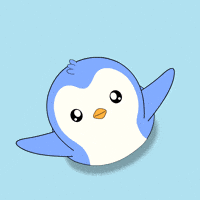

Happy Kiss Day, My Wifeey ❤️
Happy Kiss Day, My Wifeey ❤️
Tap slowly.
Do you know what I love the most about us?
Even now…
I still feel that pause.
That tiny moment before I kiss you —
where everything inside me chooses you again.
Not habit.
Not routine.
Choice.
And that’s what makes it beautiful…
I don’t kiss you because I’m used to you.
I kiss you because I never get enough of you and it always feels great.
And if tomorrow came with no memories at all…
I would fall for you,
step closer,
and kiss you —
all over again. ❤️
